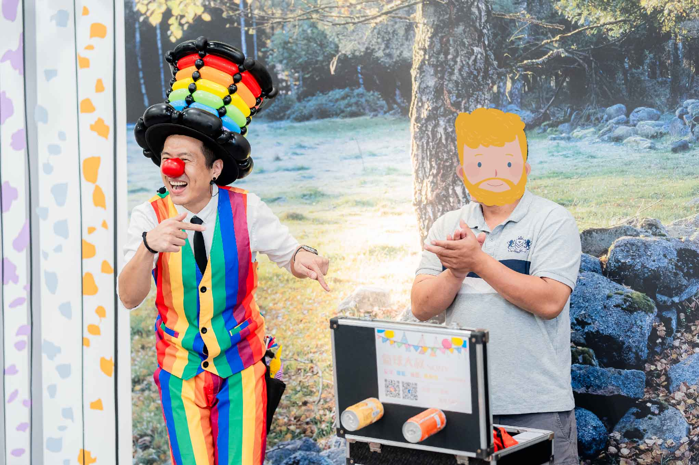
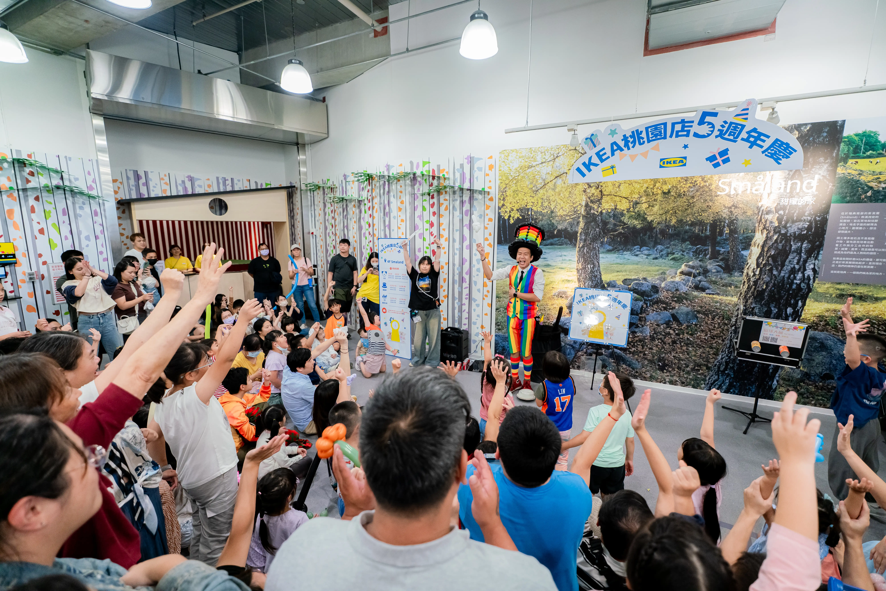
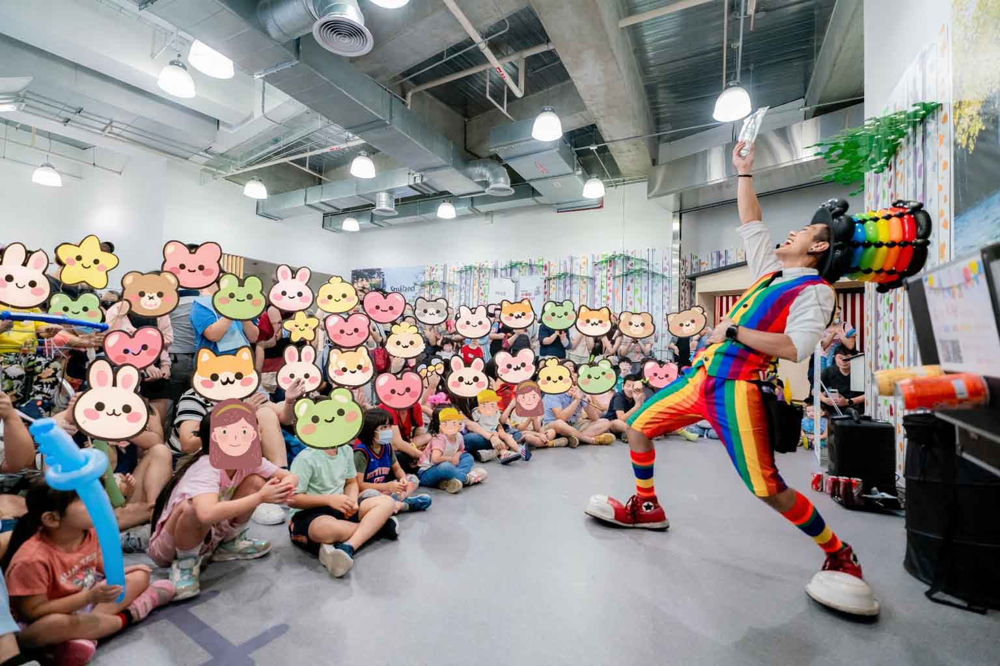

桃園 IKEA 5 週年氣球魔術秀｜氣球大叔 Sony 斯莫蘭魔法森林演出紀錄
斯莫蘭魔法森林的奇幻午後，用專業互動設計點亮品牌生日派對
📍 地點：IKEA 桃園店 斯莫蘭魔法森林 –
本次榮幸受邀參與桃園 IKEA 5 週年慶系列活動（於 2025/11/8–11/9 週末盛大舉行）。IKEA 不僅是家居靈感的起點，其標誌性的「斯莫蘭魔法森林 (Småland)」更是孩子們心中的夢幻場域。本次演出的核心目標，是在開放式的商場空間中，透過高強度的互動魔術，有效聚集人潮並延長家庭客群的停留時間。
但對我來說，比起人潮數字，更重要的是孩子臉上的表情。
有的孩子一開始躲在爸媽身後，小小聲地看著舞台；演出進行到一半，卻開始忍不住舉手、偷笑、跟著台上一起喊。
當孩子願意跨出那一步參與，代表他在這裡感到安心，也敢放心地玩。
那一刻，就是我做這份工作的意義。
活動場域與氛圍營造
連續兩日的演出，驗證了實體活動對於品牌週年慶的重要性。IKEA 團隊在動線規劃上相當細膩，保留了足夠的舞台緩衝區。表演開始前，透過音樂與視覺暖身，迅速將原本流動的逛街人潮轉化為駐足觀眾。現場座位區滿席，甚至外圍走道也聚集了大量參與者，展現了活動的高人氣。

參與式互動：延長停留時間的關鍵
在百貨或商場演出中，單向的觀賞很容易讓觀眾分心。因此，我在設計橋段時，特別強調「觀眾即主角」的概念。當我拋出提問並設計簡單任務時，孩子們會自然舉手投入。這種以「參與」取代「觀看」的設計，能有效延長停留時間，也讓家長更願意把孩子留在現場，一起完成活動體驗。

氣球藝術與 IP 角色的連結
道具的選擇，也是表演細節的一部分。為了貼合時下孩子的喜好，本次特別準備了孩子們熟悉且高人氣的「庫洛米 (Kuromi)」風格造型氣球。在表演中，氣球不僅是獎品，更是連接表演者與觀眾的橋樑。當精緻的作品在魔術環節中驚喜登場，不僅能創造視覺上的亮點，更提升了觀眾對於活動質感的認同。

專業演出的渲染力
一場成功的商場活動，依賴的不僅是技巧，更是表演者的能量投射。透過誇張的肢體語言與精準的喜劇節奏，能跨越年齡的隔閡，確保後排的觀眾也能感受到舞台的熱力。這也是我對於每一場演出品質的堅持——讓歡笑聲成為品牌活動的最佳背景音。

這兩天的 IKEA 桃園店演出，是一次非常愉快的合作經驗。感謝 IKEA 團隊的信任與專業支援，讓我們共同創造了這段充滿歡笑的 5 週年回憶。
如果您正在規劃百貨週年慶、品牌家庭日、親子商場活動或校園場合，也歡迎直接參考大叔的 親子互動魔術秀 服務介紹。除了氣球魔術橋段之外，也能依現場需求搭配孩子上台互動、定點造型氣球與品牌主題設計，讓活動更有聚客效果與現場記憶點。
💡 關於桃園品牌週年慶表演的常見問題
- Q: 桃園 IKEA 舉辦週年慶活動，氣球魔術表演對於聚客效果如何？
- A: 氣球魔術秀是百貨商場週年慶最吸睛的互動利器。在桃園 IKEA 的五週年慶典中，氣球大叔 Sony 通過斯莫蘭魔法森林的高能見度演出，成功將原本流動的家庭逛街人潮轉化為高黏著度的觀眾。不僅有效延長了消費者在商場內的停留時間，更通過精緻的造型氣球禮物（如庫洛米）與 IP 角色連結，提升了整體的活動氛圍與品牌親和力。
- Q: 百貨或親子餐廳舉辦氣球秀，氣球大叔如何確保現場的安全與動線秩序？
- A: 身為專業的氣球表演者，Sony 非常重視商場的安全標準。我們會預先與主辦單位（如 IKEA 管理團隊）進行動線討論，確保保留足夠的緩衝空間與逃生動線。演出中我們採用引導式互動，避免孩子因推擠受傷，並透過領取氣球的排隊機制，將歡笑與秩序完美結合，讓家長與商場工作人員都能安心參與活動。
- Q: 氣球大叔 Sony 的表演可以配合百貨公司的特定主題進行客製化嗎？
- A: 當然可以！無論是百貨週年慶、品牌新品發表或是 VIP 會員家庭日，我們都能根據活動主題量身打造表演內容。從配色選擇、魔術橋段設計到客製化氣球造型製作，都能與品牌精神緊密扣合。我們擁有豐富的企業合作經驗，能提供包含魔術秀、造型氣球與一站式會場佈置的高品質整合方案，滿足企業對活動質感的堅持。
🎈 正在尋找桃園品牌週年慶表演嗎？
如果您也希望為您的活動創造像現場一樣爆棚的人氣與驚喜，氣球大叔 Sony 是您的首選！我們專注於提供高品質的互動演出與情境佈置：
- 百貨商場活動：中庭舞台秀、週年慶造勢、節慶引流表演。
- 品牌行銷推廣：新品發表會、專櫃開幕快閃、VIP 客戶派對。
- 親子家庭日：企業家庭日、社區節慶晚會、私人慶生派對佈置。
📅 本文整理於 2025 年 11 月 10 日，完整紀錄真實活動現場氛圍。